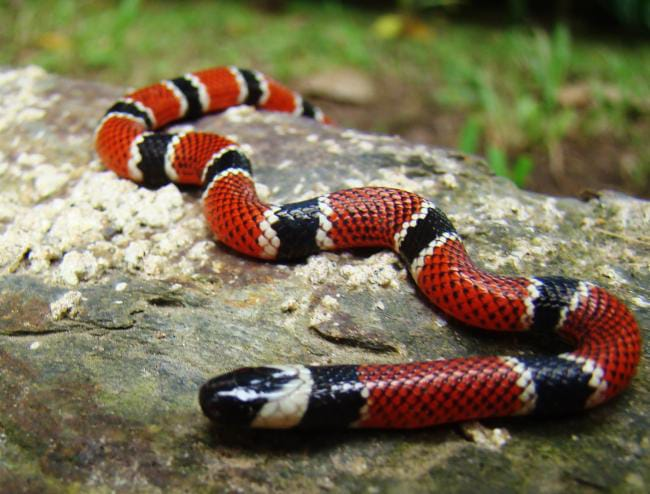

A nossa cobrinha veste as cores da Cobra Coral verdadeira (Micrurus corallinus). Na natureza, os anéis pretos desta espécie são sempre separados do vermelho por finas linhas brancas ou amarelas, e a sua área vermelha é mais espessa. Esta coloração vibrante serve como um alerta visual de perigo para afastar predadores, um fenómeno fascinante conhecido como Aposematismo!
